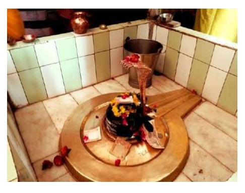

<?xml version="1.0" encoding="UTF-8"?><rss version="2.0"
	xmlns:content="http://purl.org/rss/1.0/modules/content/"
	xmlns:wfw="http://wellformedweb.org/CommentAPI/"
	xmlns:dc="http://purl.org/dc/elements/1.1/"
	xmlns:atom="http://www.w3.org/2005/Atom"
	xmlns:sy="http://purl.org/rss/1.0/modules/syndication/"
	xmlns:slash="http://purl.org/rss/1.0/modules/slash/"
	>

<channel>
	<title>Vasukeeshwar &#8211; Varanasi Temples</title>
	<atom:link href="index.html" rel="self" type="application/rss+xml" />
	<link>../../../../../index.html</link>
	<description>Temples of Varanasi as referred to in Kashi Khand</description>
	<lastBuildDate>Thu, 19 Jun 2025 05:16:46 +0000</lastBuildDate>
	<language>en-US</language>
	<sy:updatePeriod>hourly</sy:updatePeriod>
	<sy:updateFrequency>1</sy:updateFrequency>
	<generator>https://wordpress.org/?v=4.6.29</generator>
	<item>
		<title>VASUKEESHWAR</title>
		<link>../../../../../shiva-temples/vasukeeshwar/index.html</link>
		<pubDate>Tue, 11 May 2010 06:56:48 +0000</pubDate>
		<dc:creator><![CDATA[admin]]></dc:creator>
				<category><![CDATA[Other Shiva Temples (S-Y)]]></category>
		<category><![CDATA[Shiva Temples]]></category>
		<category><![CDATA[Vasukeeshwar]]></category>
		<category><![CDATA[mrit]]></category>
		<category><![CDATA[nagraj vasuki]]></category>
		<category><![CDATA[om nagar]]></category>
		<category><![CDATA[vaasukeeshwar]]></category>
		<category><![CDATA[vasu]]></category>
		<category><![CDATA[vasukeeshwar]]></category>
		<category><![CDATA[vasuveshwar]]></category>
		<category><![CDATA[ved sagar]]></category>

		<guid isPermaLink="false">../../../../../p=470.html</guid>
		<description><![CDATA[According to Kashi Khand, Chapter 66,  Lord Kartikeya was describing the Lings found around the four sides of Jyeshteshwar Ling.  Towards the South of Jyeshteshwar, there is mention of Vasukeeshwar Ling.  There is also mention of Vasuki Kund besides the above ling. Special importance is attached to performing pooja, giving alms etc. at Vasukeeshwar Temple [&#8230;]]]></description>
				<content:encoded><![CDATA[<p>According to Kashi Khand, Chapter 66,  Lord Kartikeya was describing the Lings found around the four sides of Jyeshteshwar Ling.  Towards the South of Jyeshteshwar, there is mention of Vasukeeshwar Ling.  There is also mention of Vasuki Kund besides the above ling.</p>
<p>Special importance is attached to performing pooja, giving alms etc. at Vasukeeshwar Temple (Kashi Khand, ibid) after taking bath at Vasuki Kund. Devotees will not have any fear on account of snakes (Sarp Dosh).</p>
<p></p>
<p style="text-align: center;"><strong>(VASUKEESHWAR)</strong></p>
<p>Devotees have been advised to perform pooja etc. on Naag Panchami Day which falls in the months of July-August.</p>
<p>The temple also contains the idol of Vasuki Nagraj. Vasuki Nagraj is the huge serpent which was used as a rope by Devas and Asuras in Sagar Manthan (churning of ocean) for extracting Amrit.</p>
<p>It is believed that Vasuki Kund (mentioned at para two above) was formed out of sweat emanating from of the body of Vasuki Nagaraj.  While there is no trace of Vasuki Kund in the present day, old timers believe that a river called Vasuki still exists below the premises and may be flowing underground.</p>
<p><strong><span style="text-decoration: underline;"> </span></strong></p>
<h1>LOCATION OF THE TEMPLE</h1>
<p>The temple is located at House No. Ck.7/155, Scindia Ghat, Varanasi, near Brihaspateshwar temple.  One can travel upto Chowk by Cycle Rickshaw and walk to this place via Atma Veereshwar Temple (famous landmark). Alternatively, devotees can approach the place by boat upto Scindia Ghat and climb up the steps.</p>
<p>&nbsp;</p>
<p>Please watch our YouTube Video about Vasukeeshwar at following Link</p>
<p>&nbsp;</p>
<p><a href="https://www.youtube.com/watch?v=0ndgVlXPXyk">https://www.youtube.com/watch?v=0ndgVlXPXyk</a></p>
<p>&nbsp;</p>
<p>&nbsp;</p>
<p><strong><span style="text-decoration: underline;">TYPES OF POOJAS</span></strong></p>
<p>The temple is open from 06.00 a.m to 9.00 p.m.   Aarties are performed at 10.00 a.m. and 09.00 p.m. While regular poojas are conducted by the Priest, Special poojas are performed on important days like Shivratri and certain Ekadasi days.</p>
<p>Besides the above poojas etc., devotees who are afflicted with Kaal Sarp Dosh get rid of the evil afflictions by performing special pooja at this temple.</p>
<h2>POOJARIS OF THE TEMPLE</h2>
<p>Shri Yadunandan Mishra is the Mahant of the temple and he can be contacted in his Cell number (0)9839515195 for doing any special pooja.</p>
]]></content:encoded>
			</item>
	</channel>
</rss>
